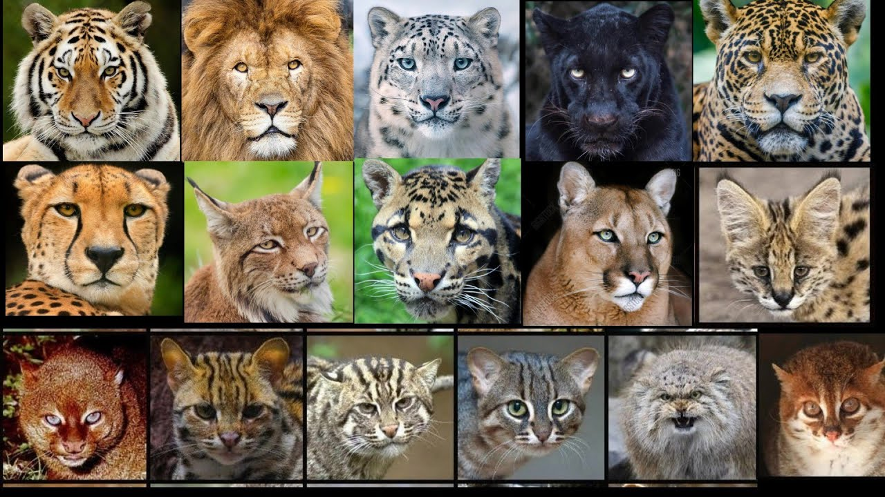

Cheetah vs other big cats
Cheetahs are unique members of the big cat family, distinguished by their physical
adaptations, hunting strategies, and ecological roles. Below is a detailed explanation of
how cheetahs compare and contrast with other big cats like lions, tigers, leopards, and
jaguars:

Physical Appearance and Build
Cheetahs: Slim, lightweight body with long legs and a small head. Their
golden-yellow coat is covered in solid black spots, with distinctive
black tear lines extending from their eyes to their mouth for glare
reduction.
Lions: Large and muscular with a golden coat. Males have a prominent
mane symbolizing dominance.
Tigers: The largest big cat, with orange fur and black vertical stripes.
Tigers are powerfully built for strength and stealth.
Leopards: Compact and muscular with a golden-yellow coat and black
rosette patterns, built for climbing trees.
Jaguars: Similar to leopards but stockier with larger rosettes containing central spots.

Speed and Hunting Style
Cheetahs: The fastest land animal, capable of reaching speeds of up to
70 mph (112 km/h). They rely on speed and sight for hunting, targeting
small to medium prey like gazelles. Hunts are typically conducted in
short, explosive chases during the day.
Lions: Relies on group hunting (prides) and brute strength to bring down
large prey like zebras and buffalo.
Tigers: Solitary hunters that rely on stealth, ambushing large prey such
as deer and wild boar
Leopards and Jaguars: Stealthy ambush predators. Leopards are agile
climbers and stash prey in trees, while jaguars often hunt near water,
even preying on caimans.

Social Structure
Cheetahs: Typically solitary, but males form small coalitions (often siblings). Females raise cubs alone.
Lions: Highly social, living in prides consisting of females, cubs, and one or two dominant males.
Tigers: Solitary except for mothers with cubs.
Leopards: Solitary and territorial, with minimal interaction outside mating.
Jaguars: Also solitary, marking and defending large territories.
Habitat and Range
Cheetahs: Prefer open grasslands and savannas where they can utilize their speed.
Lions: Found in savannas and grasslands, sometimes venturing into semi-arid regions.
Tigers: Thrive in dense forests, mangroves, and grasslands across Asia.
Leopards: Adaptable, found in forests, savannas, and mountains.
Jaguars: Primarily inhabit dense rainforests in Central and South America, near rivers and wetlands.
Conservation Status
Cheetahs: Classified as Vulnerable due to habitat loss, human-wildlife conflict, and low genetic diversity.
Lions: Vulnerable, with populations declining due to habitat destruction and poaching.
Tigers: Endangered, with fewer than 4,000 left in the wild due to poaching and deforestation.
Leopards: Varies by subspecies, with many populations listed as Vulnerable or Endangered.
Jaguars: Near Threatened, facing habitat loss and poaching.
DIFFERENCE BETWEEN CHEETAH AND OTHER BIG CATS
| FEATURE |
CHEETAH |
OTHER BIG CATS |
| Lion |
Leopard |
| ROAR |
They don't have roar |
They have roar |
They have roar |
| SPEED |
Up to 120 Km/hr |
Up to 80 Km/hr |
Up to 58 Km/hr |
| HUNTING-TIME |
Daytime |
Nighttime |
Nighttime |
| SOCIALLY |
They live alone |
They live in prides |
They are solitary |
| HUNTING-STYLE |
They hunt alone by using their speed |
They hunt in groups by using ambush and power |
They hunt by using ambush and powerful bites |